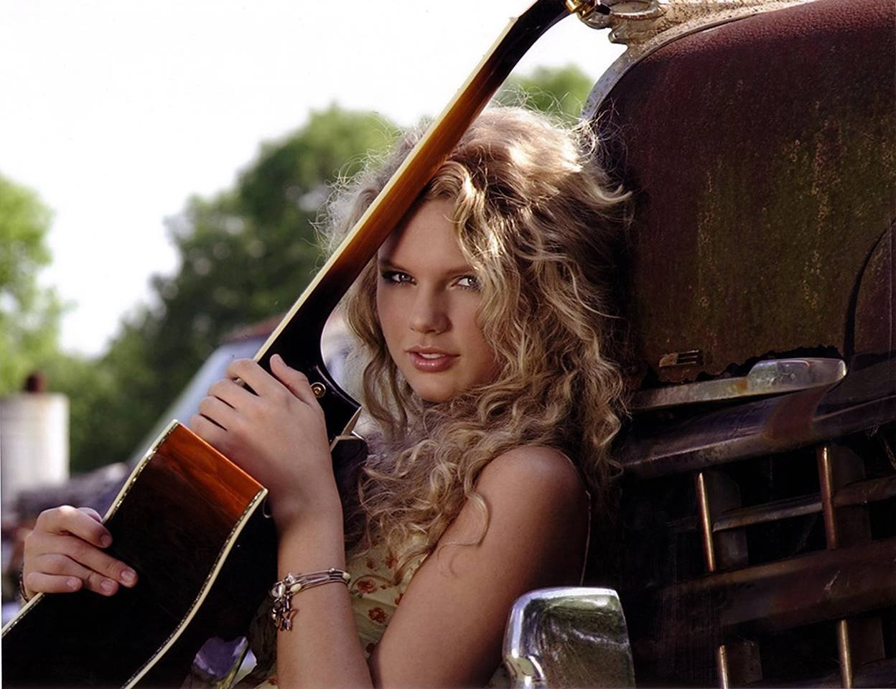
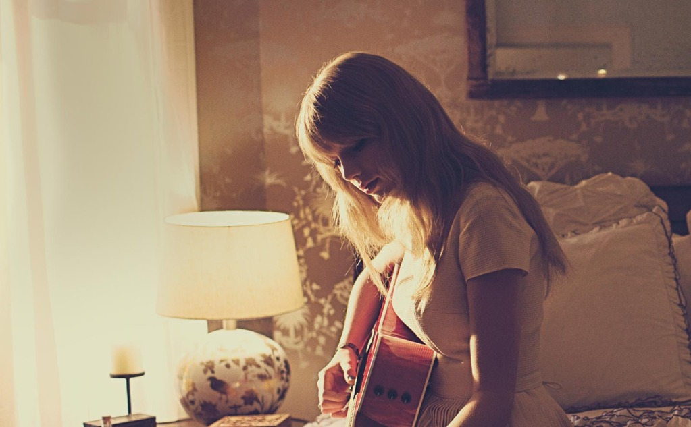
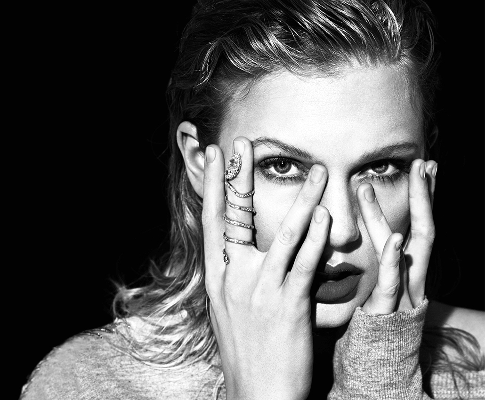
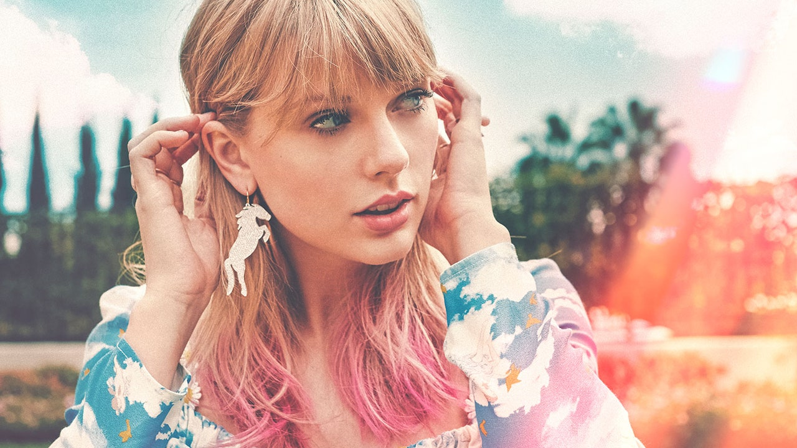
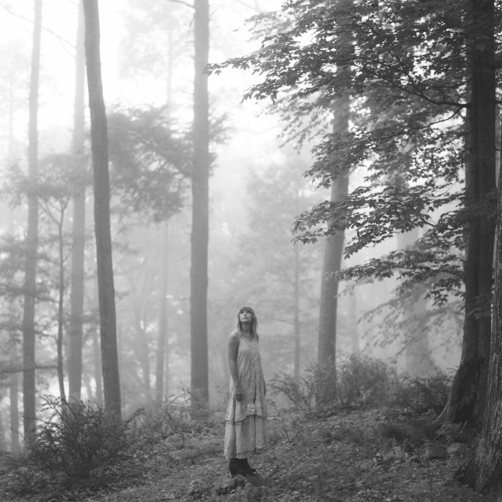
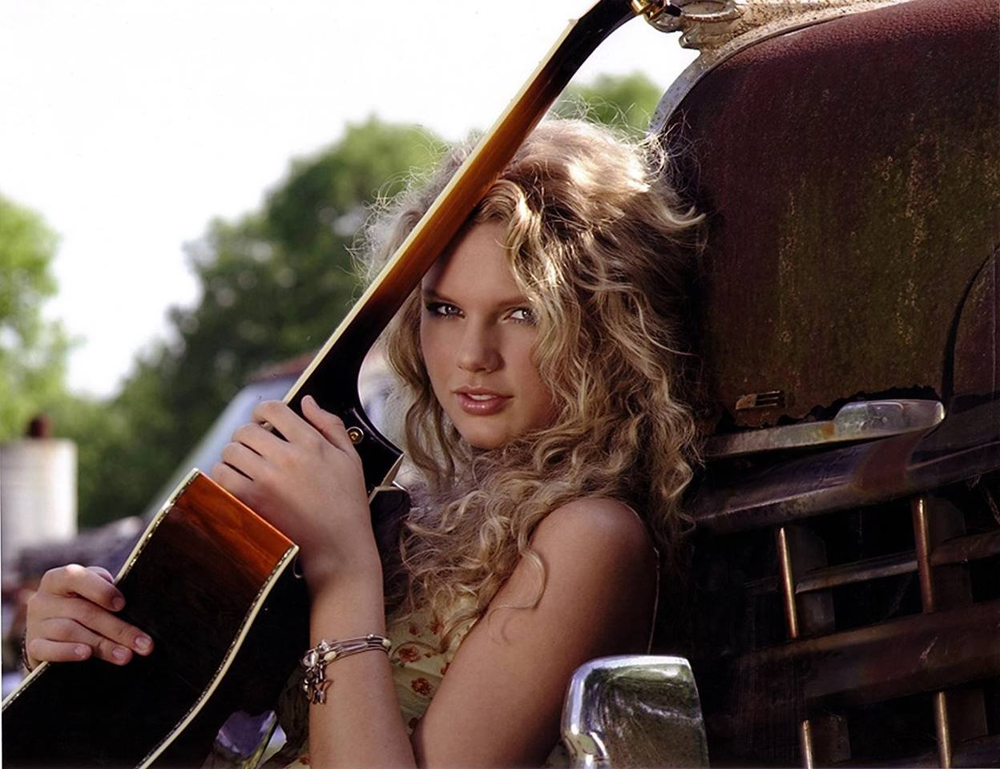
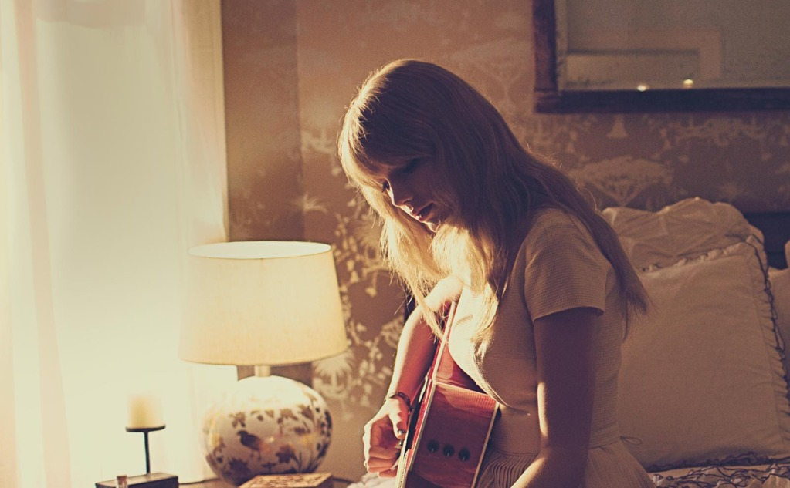
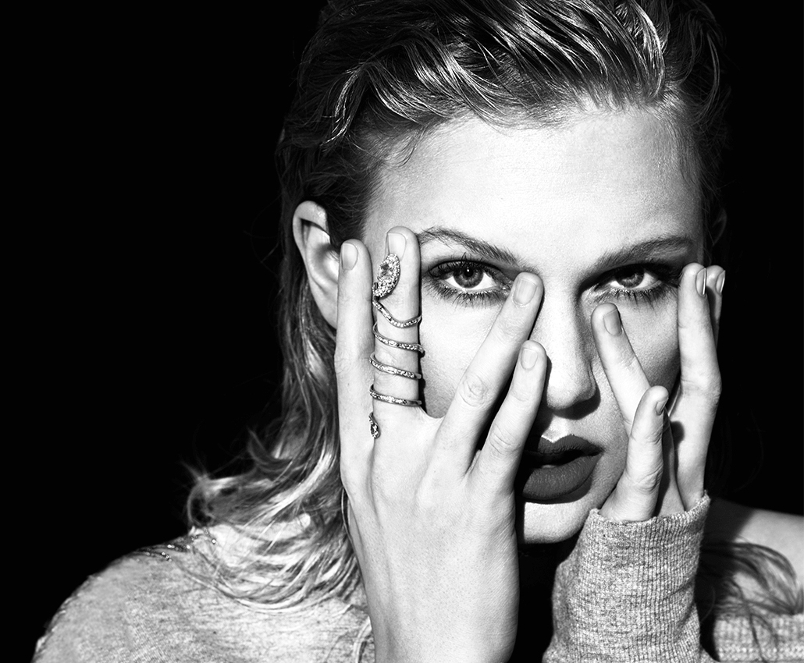
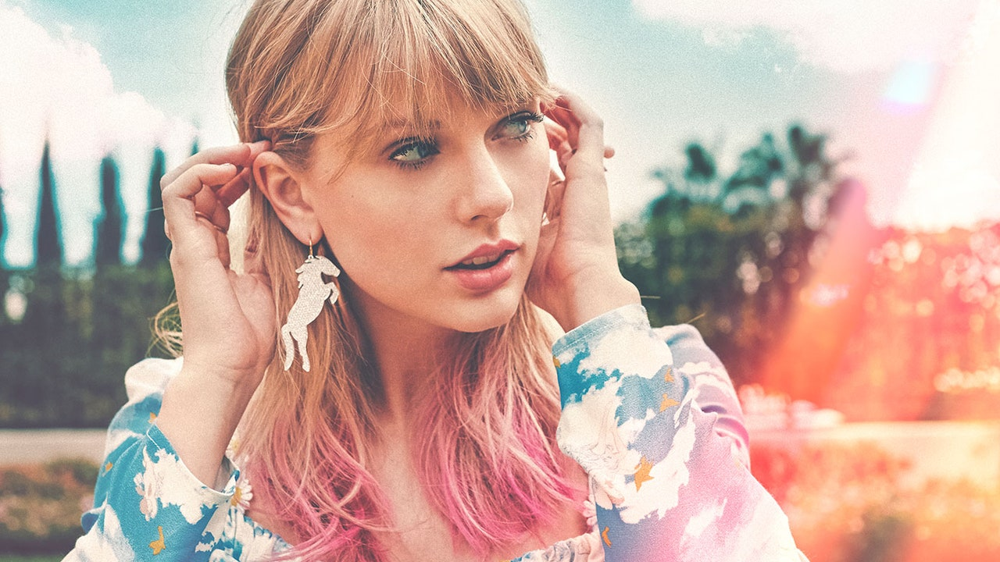
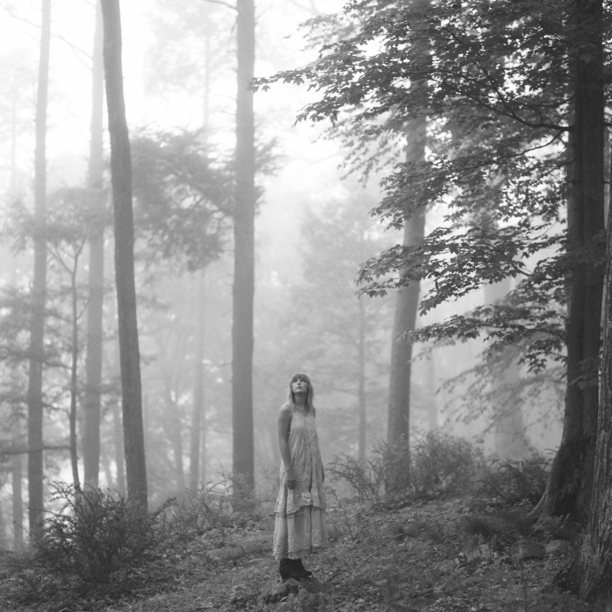

The Eras Tour será a sexta turnê da cantora e compositora estadunidense Taylor Swift, assim como a sua segunda turnê em estádios após a Reputation Stadium Tour (2018). Sendo incapaz de promover os seus álbuns de estúdio Lover (2019), Folklore (2020) e Evermore (2020) por conta da pandemia de COVID-19, Swift embarcará na The Eras Tour em apoio a todos os seus álbuns, incluindo o seu último lançamento, Midnights (2022). A turnê foi oficialmente anunciada em 1 de novembro de 2022, prevista para ser iniciada no dia 17 de março de 2023 em Glendale, Arizona. Até o momento, foram confirmados 52 concertos em estádios nos Estados Unidos, com datas internacionais a serem divulgadas. Swift descreveu o conceito da turnê como "uma jornada por todas as eras musicais de sua carreira".